hexo 博客安装教程 胎教级
环境准备
安装git
到 GitHub 的页面上下载 exe 安装文件并运行：
详细可看：(6条消息) Git 详细安装教程（详解 Git 安装过程的每一个步骤）_mukes的博客-CSDN博客_git安装
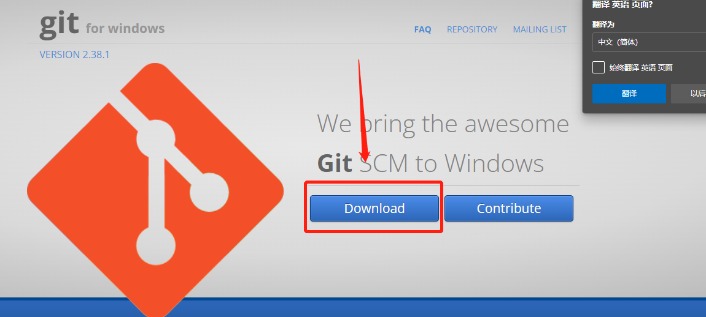
安装Nodejs
下载链接：下载 | Node.js 中文网 (nodejs.cn)
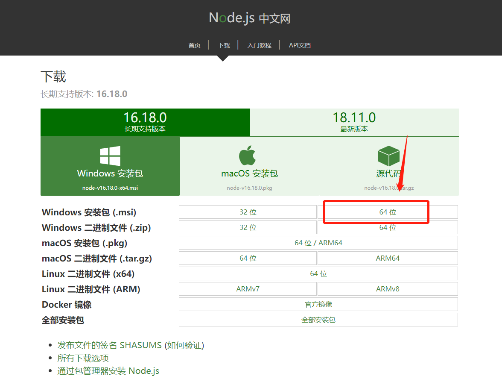
详细可看：Node.js 安装配置 | 菜鸟教程 (runoob.com)
最后通过cmd 输入node --version 检测是否安装完成，只要有输出就行，不管版本号是多少
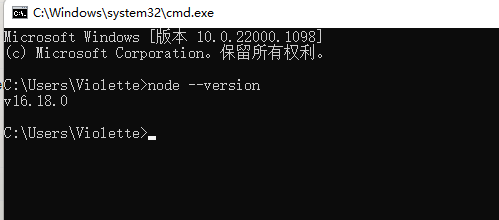
查看是否安装成功：
在桌面鼠标右键点击git bash here或者打开电脑CMD，依次输入以下指令
node -v #查看node版本
npm -v #查看npm版本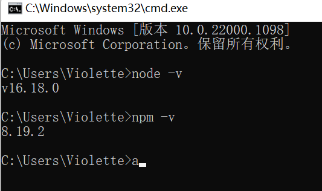
显示如上即成功
安装淘宝的cnpm 管理器
npm install -g cnpm --registry=http://registry.npm.taobao.org由于国内的镜像源速度较慢，所以我们利用 npm 来安装 cnpm ，在命令行中输入npm install -g cnpm --registry=https://registry.npm.taobao.org然后回车（Enter），稍等一会便下载好了
查看cnpm版本
cnpm -v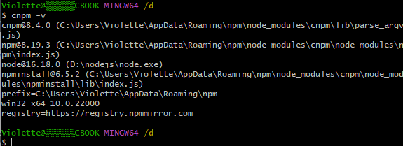
部署hexo框架
cnpm install -g hexo-cli #部署hexo框架
hexo -v #查看hexo版本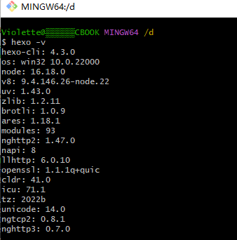
连接 Github
注册
使用邮箱注册 GitHub 账户，选择免费账户（Free），并完成邮件验证。
右键 -> Git Bash Here，设置用户名和邮箱：
git config --global user.name "GitHub 用户名"
git config --global user.email "GitHub 邮箱"创建 SSH 密匙：
输入 ssh-keygen -t rsa -C "GitHub 邮箱"，然后一路回车。
添加密匙：
进入 [C:\Users\用户名.ssh] 目录（要勾选显示“隐藏的项目”），用记事本打开公钥 id_rsa.pub 文件并复制里面的内容。
登陆 GitHub ，进入 Settings 页面，选择左边栏的 SSH and GPG keys，点击 New SSH key。
Title 随便取个名字，粘贴复制的 id_rsa.pub 内容到 Key 中，点击 Add SSH key 完成添加。
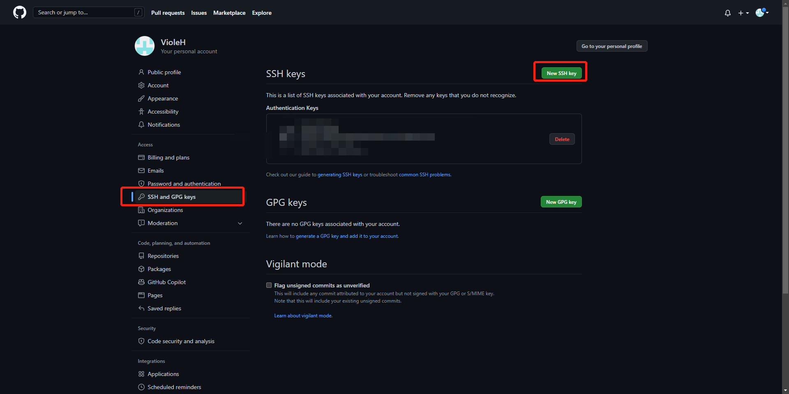
验证连接：
打开 Git Bash，输入 ssh -T git@github.com 出现 “Are you sure……”，输入 yes 回车确认。
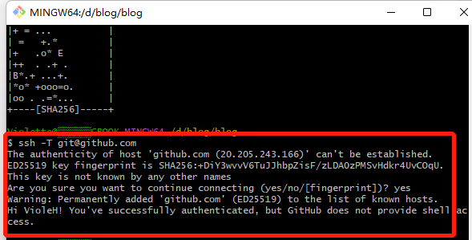
创建仓库
创建一个和用户名相同的仓库，后面加上.github.io，必须要同名，否则后面会出现404的情况
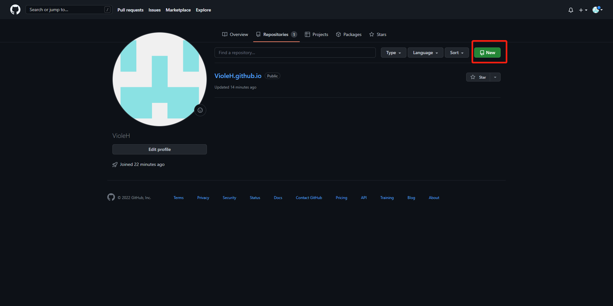
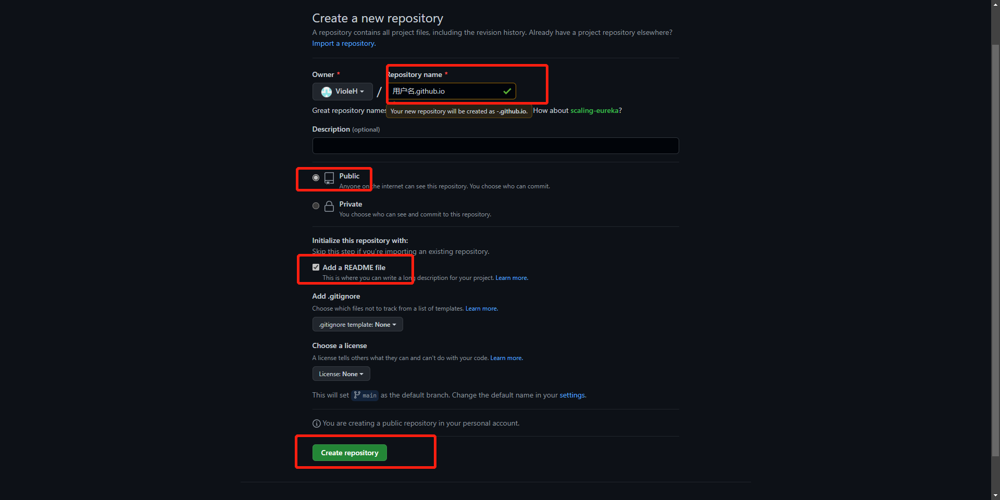
创建后默认自动启用 HTTPS，博客地址为：https://用户名.github.io
本地安装 Hexo 博客程序
新建一个文件夹用来存放 Hexo 的程序文件，如 Hexo-Blog。打开该文件夹，右键 -> Git Bash Here。
安装 Hexo
使用 npm 一键安装 Hexo 博客程序：
npm install -g hexo-cli安装时间有点久（真的很慢！），界面也没任何反应，耐心等待
Hexo 初始化和本地预览
初始化并安装所需组件：
hexo init # 初始化
npm install # 安装组件完成后依次输入下面命令，启动本地服务器进行预览：
hexo g # 生成页面
hexo s # 启动预览访问 http://localhost:4000，出现 Hexo 默认页面，本地博客安装成功！
Tips：如果出现页面加载不出来，可能是端口被占用了。Ctrl+C 关闭服务器，运行 hexo server -p 5000 更改端口号后重试。
Hexo 博客文件夹目录结构如下：
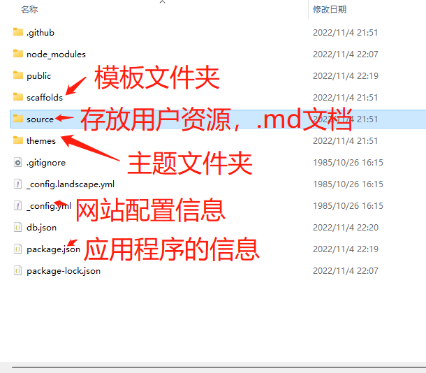
部署 Hexo 到 GitHub Pages
本地博客测试成功后，就是上传到 GitHub 进行部署，使其能够在网络上访问。
首先安装 hexo-deployer-git：
npm install hexo-deployer-git --save然后修改 _config.yml 文件末尾的 Deployment 部分，修改成如下：
deploy:
type: git
repository: git@github.com:用户名/用户名.github.io.git
branch: master完成后运行 hexo d 将网站上传部署到 GitHub Pages。
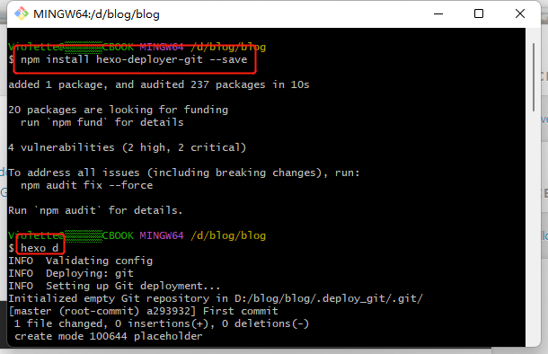
不过需要等一会，上传需要时间
过了一会再可以访问我们的 GitHub 域名 https://用户名.github.io 就可以看到 Hexo 网站了。
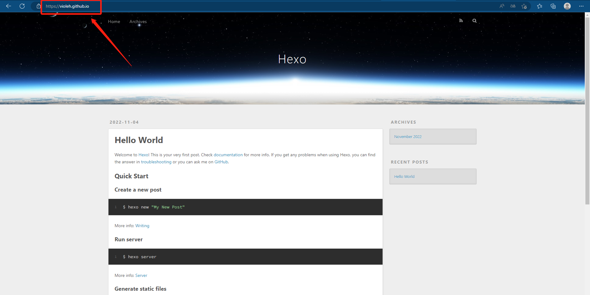
开始使用
发布文章
进入博客所在目录
右键打开 Git Bash Here，创建博文：
hexo new "My New Post"然后 source 文件夹中的_posts文件夹会出现一个 My-New-Post.md 文件，就可以使用 Markdown 编辑器在该文件中撰写文章了。
也可以不使用命令,而自己去创建 .md 文件，只需在文件开头手动加入如下格式 Front-matter 即可，写完后运行 hexo g 和 hexo d 发布。
---
title: Hello World # 标题
date: 2019/3/26 hh:mm:ss # 时间
categories: # 分类
- Diary
tags: # 标签
- PS3
- Games
---
摘要
<!--more-->
正文写完后运行下面代码将文章渲染并部署到 GitHub Pages 上完成发布。
hexo g # 生成页面
hexo s # 启动本地服务器，用于预览主题。默认地址： http://localhost:4000/
hexo d # 自动生成网站静态文件，并部署到设定的仓库。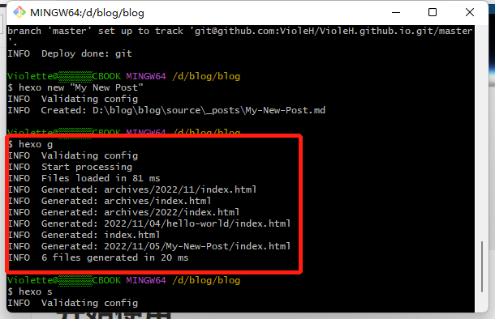
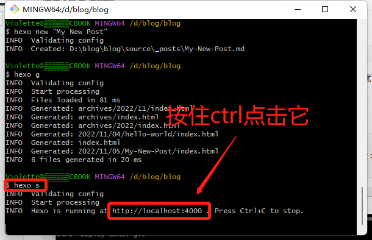
也可以直接在浏览器上输入地址：localhost:4000 。 ctrl+c 是退出
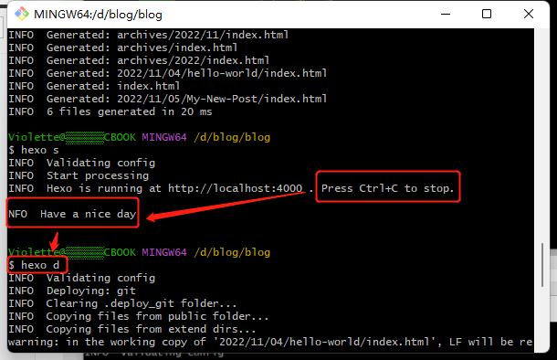
这时候再等一会（时间有长有短，基本上不会出问题，如果出了问题继续百度），然后访问用户名.github.io就可以访问自己的博客了
以下还有些hexo的常用命令
hexo new "name" # 新建文章
hexo new page "name" # 新建页面
hexo g # 生成页面
hexo d # 部署
hexo g -d # 生成页面并部署
hexo s # 本地预览
hexo clean # 清除缓存和已生成的静态文件
hexo help # 帮助网站设置
包括网站名称、描述、作者、链接样式等，全部在网站目录下的 _config.yml 文件中，参考官方文档按需要编辑。
注意：冒号后要加一个空格！
更换主题
可以在 Themes | Hexo 选择一个喜欢的主题，或者其他地方，各种各样的主题网上应有尽有，至于怎么安装，就自己去百度吧（有些坑亲自去踩了才有意思 /doge）